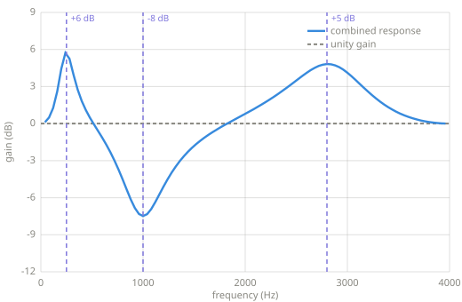
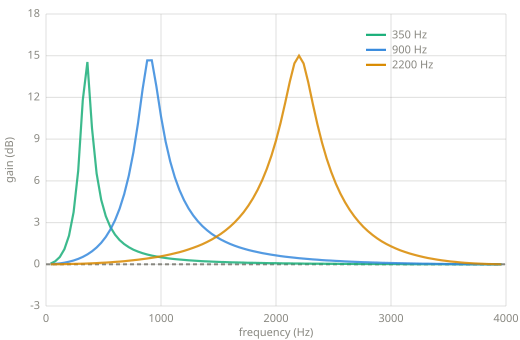
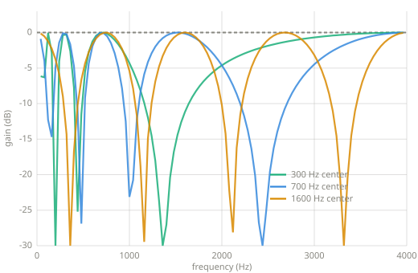

Filter effects¶
Equalization combines fixed filters. Wah and phasing move filters while audio passes through them. These effects turn the machinery of Chapter 9 into controls for tone and motion.
Chapter 10 — filter effects, between Filters and the DFT, FFT, and STFT.
Equalization¶
An equalizer sets gain by frequency region. A parametric equalizer describes each region with a center frequency, gain, and Q. Positive gain boosts the region. Negative gain cuts it. Q controls the width around the center frequency.
One peaking biquad supplies one band. Several bands run in series, so the output of one becomes the input of the next. Gain is multiplied in linear amplitude and added in dB. For example, a 3 dB boost from one band and a 2 dB boost from another produce 5 dB where their responses overlap.

Three peaking biquads in series. Their settings are +6 dB at 250 Hz, -8 dB at 1000 Hz, and +5 dB at 2800 Hz. The plotted curve is the measured response of the complete equalizer.
The code accepts a list of (frequency, gain_db, q) settings. It obtains the coefficients
for each peaking filter from the Audio EQ Cookbook formula and runs the sections in order.
EQUALIZE(x, sr, bands)
y ← x
for each (frequency, gain, Q) in bands
coefficients ← PEAKING-COEFFICIENTS(sr, frequency, gain, Q)
y ← BIQUAD(y, coefficients)
return y
Wah¶
A wah moves a narrow boost through the spectrum. A low position emphasizes lower frequencies, and a high position emphasizes higher frequencies. The moving peak changes the relative strengths of a sound's harmonics. A pedal can control the center frequency directly. An LFO or an envelope follower can move it automatically.
The reference implementation uses an LFO. The center frequency moves on a logarithmic scale because equal ratios correspond to equal musical intervals. The midpoint between 350 and 2200 Hz is therefore their geometric mean, about 878 Hz, rather than their arithmetic mean.

Three stationary measurements from one wah sweep. The running effect moves continuously between these responses.
The filter coefficients change for every sample. Its four history values do not reset when the coefficients change. Resetting them would introduce a discontinuity each time the peak moved.
WAH(x, sr, low, high, rate, gain, Q)
state ← four zero history values
for each sample x[n]
position ← 0.5 + 0.5 · SIN(2π · rate · n / sr)
frequency ← low · (high / low)^position
coefficients ← PEAKING-COEFFICIENTS(sr, frequency, gain, Q)
y[n], state ← BIQUAD-SAMPLE(x[n], coefficients, state)
return y
An envelope-controlled wah replaces the LFO position with a smoothed measurement of the input level. The envelope follower from Chapter 5 supplies that control signal. That arrangement is commonly called auto-wah or envelope filtering.
Phasing¶
An allpass filter has unity gain at every frequency, but its delay depends on frequency. The delay appears as a frequency-dependent phase shift. The filtered signal alone has a flat magnitude response. Mixing it with the dry signal makes some frequencies cancel and others reinforce. The cancellations appear as notches.
A phaser puts several allpass sections in series and moves their center frequency. More sections produce more phase rotation and more notches. The reference implementation uses four second-order allpass sections, mixes equal amounts of dry and filtered signal, and moves all four sections with one LFO.

The phaser held at three points in its sweep. The allpass cascade has unity gain before the dry signal is mixed back in. The mix produces the notches shown here.
PHASER(x, sr, low, high, rate, Q, stages)
state[1 .. stages] ← zero history values
for each sample x[n]
frequency ← LOG-SWEEP(n, sr, low, high, rate)
coefficients ← ALLPASS-COEFFICIENTS(sr, frequency, Q)
wet ← x[n]
for stage ← 1 to stages
wet, state[stage] ← BIQUAD-SAMPLE(wet, coefficients, state[stage])
y[n] ← 0.5 · (x[n] + wet)
return y
Reference implementation (Python)¶
The three effects reuse the biquad implementation from Chapter 9. That chapter also contains the peaking and allpass coefficient formulas used below.
def equalizer(x, sr, bands):
"""Apply peaking-EQ bands in series.
Each band is (center_frequency_hz, gain_db, q).
Frequencies are between zero and sr/2, and q is positive.
"""
out = list(x)
for freq, gain_db, q in bands:
out = biquad(out, rbj_peaking(sr, freq, gain_db, q))
return out
def _swept_frequency(n, sr, low, high, rate, phase=0.0):
"""An LFO sweep on a logarithmic frequency scale."""
position = 0.5 + 0.5 * math.sin(2.0 * math.pi * rate * n / sr + phase)
return low * (high / low) ** position
def wah(x, sr, low=350.0, high=2200.0, rate=1.5, gain_db=15.0, q=2.5):
"""Sweep a resonant peaking filter between low and high.
0 < low <= high < sr/2; rate is nonnegative and q is positive.
"""
x1 = x2 = y1 = y2 = 0.0
out = []
for n, s in enumerate(x):
freq = _swept_frequency(n, sr, low, high, rate)
b0, b1, b2, a1, a2 = rbj_peaking(sr, freq, gain_db, q)
y = b0 * s + b1 * x1 + b2 * x2 - a1 * y1 - a2 * y2
x2, x1 = x1, s
y2, y1 = y1, y
out.append(y)
return out
def phaser(x, sr, low=300.0, high=1600.0, rate=0.4, q=0.5, stages=4):
"""Mix dry audio with a swept cascade of allpass biquads.
0 < low <= high < sr/2; rate is nonnegative, q is positive, and
stages is a positive integer.
"""
states = [[0.0, 0.0, 0.0, 0.0] for _ in range(stages)]
out = []
for n, dry in enumerate(x):
freq = _swept_frequency(n, sr, low, high, rate)
coeffs = rbj_allpass(sr, freq, q)
wet = dry
for state in states:
x1, x2, y1, y2 = state
b0, b1, b2, a1, a2 = coeffs
y = b0 * wet + b1 * x1 + b2 * x2 - a1 * y1 - a2 * y2
state[:] = [wet, x1, y, y1]
wet = y
out.append(0.5 * (dry + wet))
return out
Key parameters¶
| Effect | Parameter | What it controls |
|---|---|---|
| EQ | Center frequency | The middle of one adjusted region. |
| EQ | Gain | The boost or cut at the center, in dB. |
| EQ / wah | Q | The width of the boost or cut. Higher Q makes it narrower. |
| Wah / phaser | Range | The lowest and highest positions of the sweep, in Hz. |
| Wah / phaser | Rate | The number of complete sweeps per second. |
| Phaser | Stages | The amount of phase rotation and the number of possible notches. |
| Phaser | Mix | The balance between the dry and allpass paths. Cancellation requires both. |
Pitfalls
- A boost can push samples outside
[-1, 1]. Leave headroom before an equalizer or reduce the output gain afterward. - Coefficients that jump between distant values can make a click. Smooth manual controls and use continuous modulators for moving filters.
- A high-Q moving filter can produce a large resonant peak. The peak needs the same headroom check as an EQ boost.
- A phaser needs phase alignment between its dry and filtered paths. Extra delay in either path changes the cancellations or removes them.
Related effects¶
- Tremolo uses an LFO to move gain. Wah uses the same controller to move a filter frequency.
- Envelopes provide the control signal for envelope filtering and auto-wah.
- Chorus mixes a dry signal with a modulated delayed copy. A phaser has the same dry-and-wet layout, but its filtered copy has frequency-dependent phase shift.
- Frequency-domain effects reshape spectra in blocks after an STFT. The effects on this page process one sample at a time.
Learn more¶
- Robert Bristow-Johnson, Audio EQ Cookbook, W3C Working Group Note. It gives the coefficient formulas for peaking and allpass biquads.
- P. Dutilleux and U. Zölzer, “Filters,” in DAFX: Digital Audio Effects, chapter contents and companion material. The chapter covers equalizers, wah, phasing, and time-varying filters together.